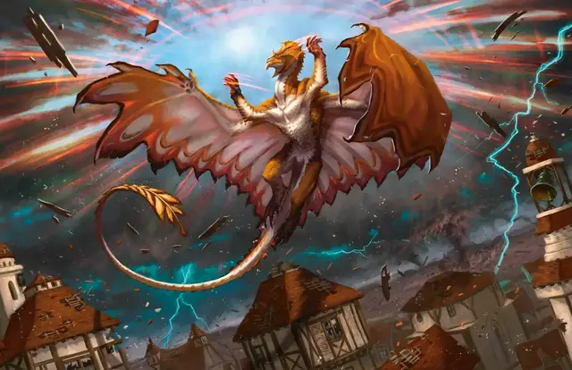

Власть над погодой
Control Weather
8 уровень, Преобразование

Время сотворения 10 минут
Дистанция На себя (радиус 5 миль)
Компоненты В, С, М (горящее благовоние и кусочки земли и дерева, смешанные с водой)
Длительность Концентрация, вплоть до 8 часов
Классы Волшебник, Друид, Жрец
Вы получаете на время длительности контроль над погодой в пределах 5 миль от себя. Для накладывания этого заклинания вы должны находиться на открытом воздухе. Если вы переместитесь в место, где над головой не будет неба, заклинание тут же закончится.
Когда вы накладываете это заклинание, вы изменяете текущую погоду, которую определяет Мастер в зависимости от климата и времени года. Вы можете изменить осадки, температуру и ветер. Требуется 1к4 × 10 минут, чтобы новые условия вступили в силу. Когда новые условия вступят в силу, вы можете создать новые условия. Когда заклинание оканчивается, погода постепенно возвращается к нормальной.
Изменяя погоду, найдите текущее состояние в таблицах и измените их на одну позицию выше или ниже. Изменяя ветер, можете изменить его направление.
Осадки
| Сила | Состояние |
| 1 | Чистое небо |
| 2 | Небольшая облачность |
| 3 | Пасмурно или густой туман |
| 4 | Дождь, град или снег |
| 5 | Проливной дождь, сильный град или метель |
Температура
| Сила | Состояние |
| 1 | Невыносимая жара |
| 2 | Жара |
| 3 | Тепло |
| 4 | Прохладно |
| 5 | Холодно |
| 6 | Арктическая стужа |
Ветер
| Сила | Состояние |
| 1 | Штиль |
| 2 | Умеренный ветер |
| 3 | Сильный ветер |
| 4 | Буря |
| 5 | Шторм |